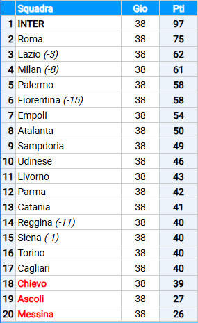

Alla metà di agosto del 2006 il Milan, nell'ambito del processo per lo scandalo del calcio
italiano, viene nuovamente deferito dal procuratore Palazzi per responsabilità oggettiva. Otto punti di penalizzazione
.
In campionato, perde entrambi i derby a venticinque anni di distanza dall'ultima volta,
il primo per 3-4 e il secondo per 2-1, il club raggiunge l'obiettivo minimo stagionale, il piazzamento tra le prime
quattro. I rossoneri non riusciranno, sia per la penalizzazione per lo scandalo del calcio
sia per propri demeriti, a tenere il passo record dell'Inter campione d'Italia, che distanzierà il Milan di 36 punti
(compresi gli otto di penalizzazione).
Alla fine della stagione, all'età di 41 anni, si ritira dall'attività agonistica il vice-capitano Alessandro
Costacurta, uno dei simboli storici della squadra degli ultimi venti anni. Il 13 maggio, nella gara contro il Catania,
Paolo Maldini raggiunge le 600 presenze in Serie A, primo calciatore a toccare questa quota.

